WADAMESH user guide
WADAMESH turns a LilyGo T-Deck — its landscape screen, BlackBerry-style keyboard and trackball — into a complete front-end for your MeshCore radio: chat, channels, contacts, a live map and deep radio settings, all on the device. (It also runs on the Heltec V4 and Tanmatsu.) Every screen below is a real screenshot from the device.
On devices with a microSD slot (the LilyGo T-Deck and Tanmatsu), wadamesh is best used with a card in place. It keeps map tiles, your contacts and your chat history on the card, which is roomier and far more reliable than the small internal flash, so a card prevents memory issues and stops that data being lost on reboot. The Heltec V4 has no card slot and manages fine on its internal storage.
Home
The home tab is your app launcher — a grid of everything on the device:
- Cmdr — the command centre overview.
- Chats, Contacts, Map, Mentions — jump straight to those.
- Advertise — announce yourself to the mesh (manual or on a timer).
- Signal and Monitor — live RX signal and a repeater-style RF activity view.
- Spectrum — sweep the LoRa band for interference.
- Settings, Terminal (MeshCore CLI), Files (microSD).
The bar along the bottom is always there — it switches the five main tabs (Chat, Contacts, Home, Map, Settings) from anywhere. The top bar shows unread count, time, signal and battery.
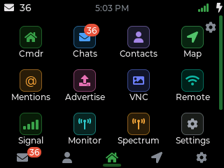
Chat
Every conversation in one list, newest first — both channels (group chats like #wadamesh, Public) and direct messages. An unread badge shows the count.
On each row
- Tap a row to open the conversation, then type on the keyboard to reply.
- The gear on the right opens that chat's settings — mute, region & scope, share secret, blocked users, remove — the same screen as the cog inside a chat.
The top-right buttons add a contact, mark everything read, and show your QR code.
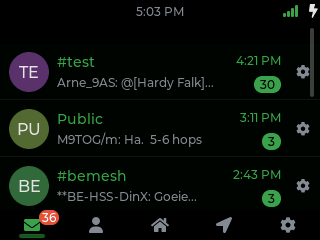
Contacts
Everyone your node knows — name, type and how recently you heard them. Tap a contact to message it or open its details: signal history, a route trace, telemetry, and share/favourite options.
The overflow menu (top right) holds Search, the Discovered list (nodes heard but not yet added), Add contact, Auto-add settings, and the Blocked list. Auto-add can pull new nodes in from their adverts, or you can add them by hand.
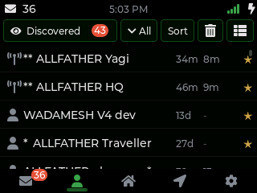
Map
An OpenStreetMap / OpenTopoMap view with your position and your contacts plotted as markers, plus link lines from you to each node. Tiles are fetched over Wi-Fi through the wadamesh proxy and cached to flash (or microSD), so areas you've viewed work offline.
It also has a line-of-sight analyzer: pick a contact and it uses SRTM elevation to show whether terrain blocks the path.
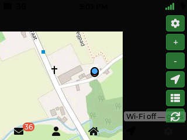
Bring your own tiles (offline maps)
You don't need Wi-Fi to see the map. Copy a standard OpenStreetMap tile pack onto the T-Deck's microSD card and the map reads straight off the card, fully offline.
Where they go. Use the usual slippy-map z/x/y folder layout, in either of these locations on the card:
/maps/osm/<z>/<x>/<y>.png— the Meshtastic / MeshCore standard layout (recommended, so packs are interchangeable between apps)./tiles/<z>/<x>/<y>.png— also read. This is the same folder the Wi-Fi download cache uses, so your own tiles and downloaded ones live side by side.
Format. 256×256 .png tiles (.jpg also works). z is the zoom level and x/y the tile column/row at that zoom — the same scheme OSM's own tile server and every XYZ tile downloader use, so most ready-made packs drop in unchanged.
Turn it on. Open the map's options (the gear button on the map) and switch on Tiles from SD card; the status line confirms Map tiles: microSD. Turn it back off to fetch live tiles over Wi-Fi again.
Making a pack. Any XYZ / slippy-map tile downloader works — point it at OpenStreetMap for your area and a sensible zoom range, then copy the resulting z/x/y folders onto the card. Each extra zoom level roughly quadruples the tile count, so grab only the levels you'll actually use.
The "Tiles from SD card" toggle is a T-Deck feature. The Heltec V4 has no microSD slot, so it caches downloaded tiles to a small internal partition (no offline packs there). On the Tanmatsu, tiles — your own or downloaded — live at /tiles/<z>/<x>/<y>.jpg on the microSD card; drop JPEG tiles there and they show alongside the downloaded ones.
Settings
A tile for each category. Tap one to open its page; the title bar carries a back chevron. The full set is in Settings pages below.
- Profile — your name and node identity.
- Radio & Mesh — frequency, spreading factor, region scope, high-gain receiver, signal probe, auto-advert.
- Auto-add, Wi-Fi, Bluetooth, GPS — discovery and connectivity.
- Clock, Battery, Sensors, Display, Keyboard, Sound, Quick replies, Lock screen — the device experience.
- Language (twelve UI languages), Backups, and About (firmware version, update check, diagnostics).
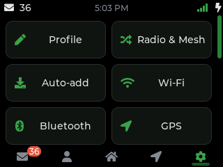
Companion mode
WADAMESH runs everything on its own, but it can also be the radio for the official MeshCore app on your phone (iOS and Android). Your phone brings the big screen and full keyboard; the device does the LoRa. Best of all it works alongside the on-device UI — you can keep using the touch screen while your phone is connected, and your contacts, channels and messages stay in sync between them.
Three ways to connect
- USB — plug the device into an Android phone or a computer; the app connects over the cable. Nothing to set up on the device.
- Bluetooth — turn on Bluetooth in Settings → Bluetooth. The device appears in the app as
MeshCore-<your node name>; pair with the 6-digit code (default123456, changeable on the same page). - Wi-Fi — put the device on your network in Settings → Wi-Fi. On the same Wi-Fi, the app connects to the device's IP address on port
5000(the Wi-Fi page shows the IP).
Bluetooth and Wi-Fi can be on at the same time, but each one reserves a good chunk of RAM. On the Heltec V4 especially — it has the least free memory of the three boards — keeping both on at once leaves little headroom and can lead to instability or odd behaviour. If you only want the phone app, pick one transport (Bluetooth or Wi-Fi) and leave the other off; if you mostly use the device on its own, keep both off.
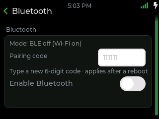
Remote & web app
Over Wi-Fi, a WADAMESH device can put its screen — or a whole browser app — on your phone or laptop. There is nothing to install: the device serves a web page you open in any browser on the same network. Turn it on from Home → Remote (or the Remote screen in Settings), pick a mode, and open the address it shows.
Three ways to connect
- Remote app (recommended) — a full control panel, native to the browser: Chats, Contacts, a Terminal and Settings, with live message notifications. Run the device entirely from your phone.
- Screen mirror (VNC) — streams the device's live screen to the browser and sends your taps and key presses back, so you see and drive exactly what is on the device, in real time.
- Remote UI — renders the interface off-screen at desktop size (a wide landscape layout) and streams that instead of the small panel, for a roomier view on a big screen.
Screen mirror and Remote UI both show the same interface you already know from the device — mirrored, or drawn larger. The Remote app is different: a browser-native panel built for a phone, shown below.
Turning it on
Connect the device to Wi-Fi first, then open Home → Remote. The screen shows the address to type into your browser (like http://192.168.1.42) and a switch for each mode. Only one streaming mode runs at a time, and the phone and the device must be on the same Wi-Fi network.
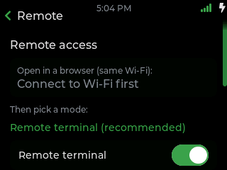
The remote app is phone-first. It carries the same status icons as the device (signal, Wi-Fi, Bluetooth, battery), pops up a notification when a message arrives, and refreshes an open chat on its own as replies come in — so you rarely need to touch the device itself.
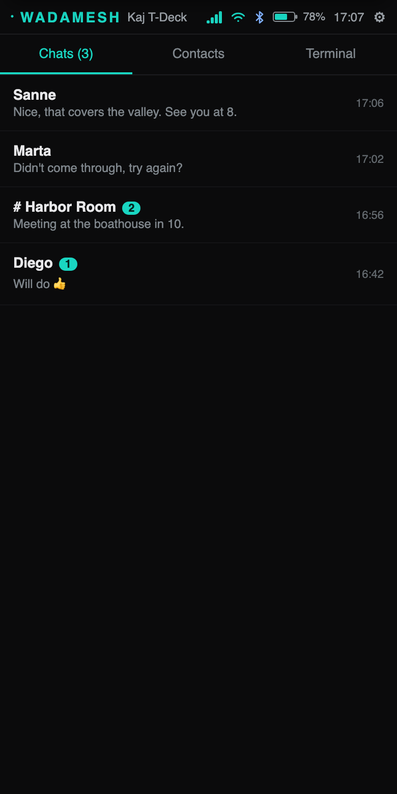
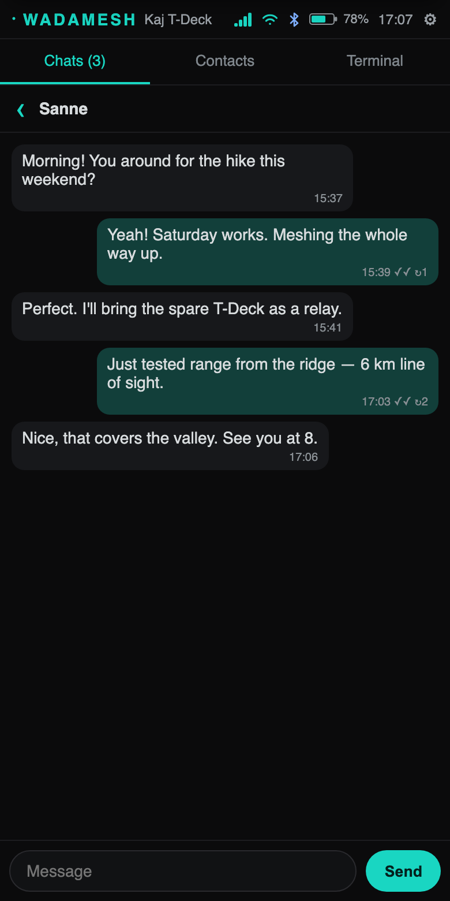
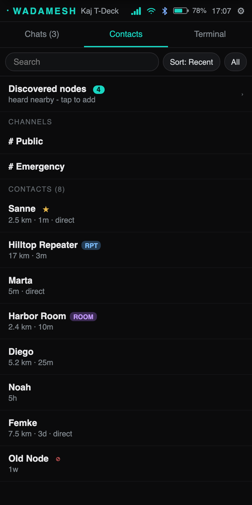
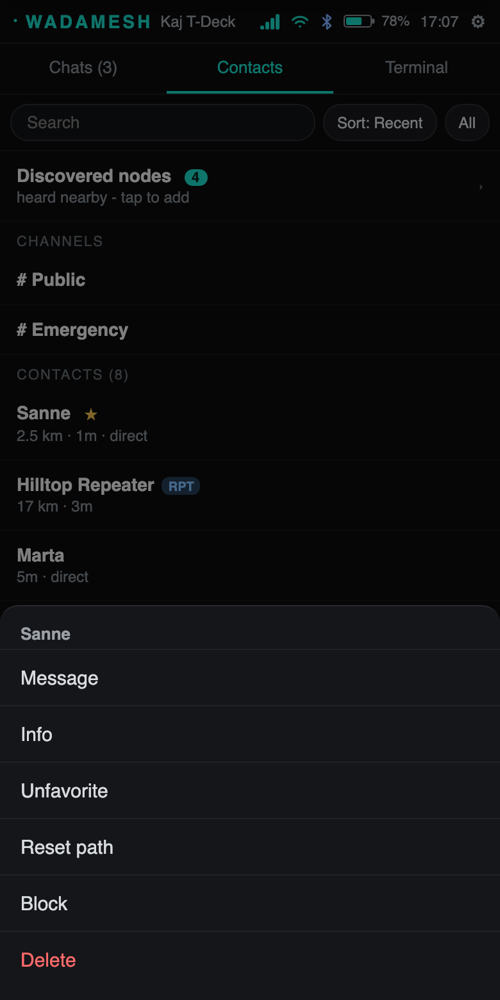
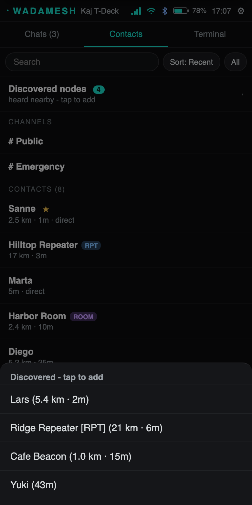
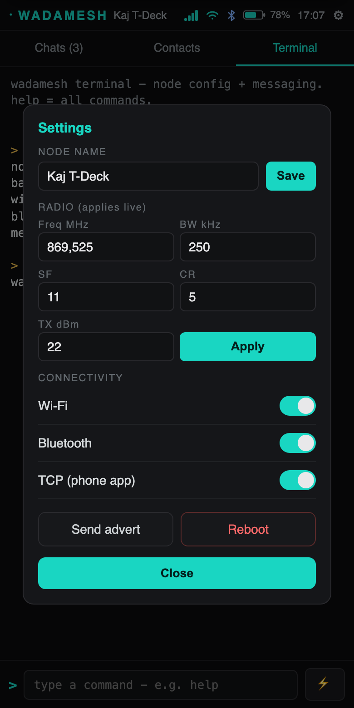
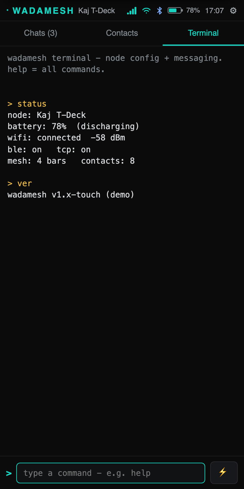
Updates & test builds
On the boards that update over Wi-Fi (the Heltec V4 and the standalone T-Deck), WADAMESH checks for new firmware on its own. When one is available, Settings → About shows it and you can flash it straight from the device with Install update, no computer needed. (Under Launcher and on the Tanmatsu you update through Launcher or the app store instead.)
Two channels: Stable and Test
- Stable is the default. It is the build that has been tested and is recommended for everyday use. Leave your device on this unless you want to help test.
- Test (beta) gets new features and fixes earlier, before they are proven. It can be rough, so it is meant for trying things early and reporting bugs, not for a device you rely on.
Turn on test builds
Flip Settings → About → "Get test builds (beta)" on. From then on, both the update check and Install update follow the test channel, so the device offers the newest test build over Wi-Fi. Turn the switch back off to return to stable. You can switch either way at any time.
Prefer to start on a test build from scratch? Pick Beta · testing when you flash from flasher.wadamesh.com.
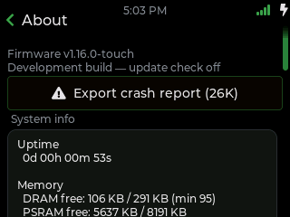
Settings pages
WADAMESH splits its settings into nineteen pages. Here is what each one does and the controls you will find on it. Open any page from the Settings tab; a back chevron in the title bar returns you to the grid.
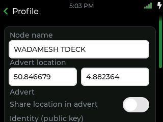
Profile
- Node name — your callsign on the network
- Advert location plus a share-in-advert toggle
- Identity key and Share QR to hand out your contact
- Export / Import your whole setup as a JSON backup
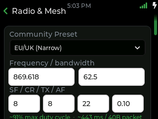
Radio & Mesh
- Radio — preset, frequency, bandwidth, spreading factor, coding rate, TX power, with a live duty-cycle and airtime-per-packet readout
- Mesh — answer-telemetry, path-hash size, region scope tag, scope direct messages
- Signal — high-gain receiver (Heltec V4.3), signal probe, and a shortcut to the Advertise app
- Experimental — multi-ACKs, client repeat, RX boost, duty meter
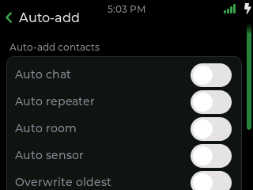
Auto-add
- Per-type toggles: chat, repeater, room, sensor
- Overwrite oldest when the contact list is full
- Notify when a new contact is added
- Max hops filter for how far away a node can be
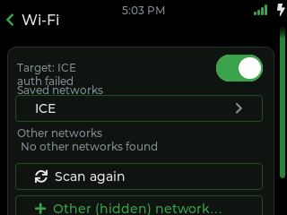
Wi-Fi
- On / off with a live status line (IP, signal)
- Scan and tap an SSID, or type one in by hand
- Save & reconnect applies live — no reboot
- Saved network slots for one-tap quick-connect
Bluetooth
- Enable Bluetooth with a live mode status line
- Set a 6-digit pairing code (applies after a reboot)
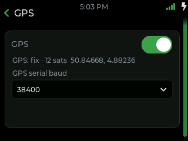
GPS
- On / off with a live fix status (acquiring, 2D/3D, age)
- Serial baud rate (applies after a reboot)
- Reads "no GPS module" on devices without one
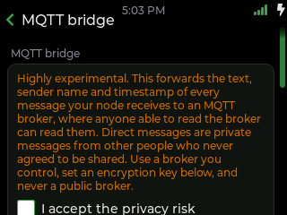
MQTT bridge experimental
- Publishes the text, sender and time of messages your node hears to an MQTT broker
- Broker host, port and topic, plus an encryption key
- Stays off until you accept the privacy note — anyone who can read the broker sees the messages, so use one you control, never a public broker
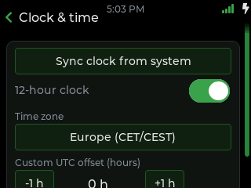
Clock & time
- Sync clock from the system / NTP
- Time zone picker, or a custom UTC offset with steppers
- 12-hour clock toggle
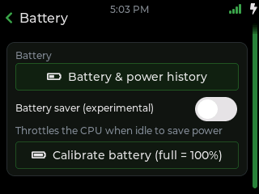
Battery
- Battery & power history chart
- Calibrate — tap to set 100% at the current voltage
- Battery saver throttles the CPU when idle (T-Deck)
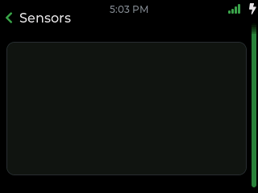
Sensors Heltec V4
- Expansion Kit configuration
- Show Sensors tab in the bottom bar (applies after restart)
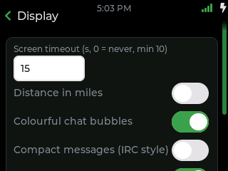
Display
- Screen timeout before it sleeps
- UI size — Normal / Large / Huge
- Colourful chat bubbles, distance in miles, hide device name
- Theme colour picker
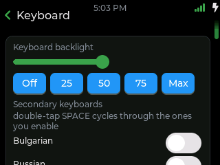
Keyboard
- Secondary layouts — Cyrillic, Greek, Arabic, French, German and more
- Accent popups — long-press for accented letters
- Enter sends the message (T-Deck)
- Flash the screen and keys on a new message (T-Deck)
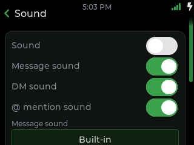
Sound
- Master sound plus per-type toggles: message, DM, @mention
- Custom sound files from microSD where supported
- Volume control (T-Deck / Tanmatsu)
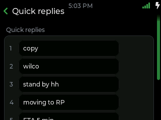
Quick replies
- Edit six short replies
- Pick them from the composer to send instantly
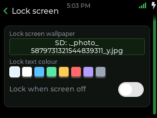
Lock screen T-Deck
- Wallpaper picker and lock text colour
- Lock when screen off, then hold to unlock
General
- Send advert now
- Store data on SD (reboot)
- Run setup again from scratch
- Reboot device
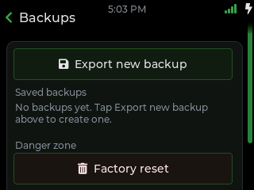
Backups
- Export a new JSON backup
- Restore from the saved list
- Factory reset in the danger zone
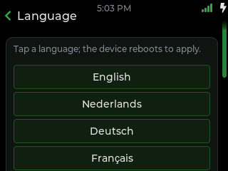
Language
- Tap a language; the device reboots to apply
About
- Firmware version plus update check / install
- Get test builds (beta) switch: opt into the test channel
- Full system diagnostics — uptime, chip, memory, flash, storage
- Device ID and crash-report export
Apps
Tools from the home launcher. RF Monitor is a repeater-style view of recent packets and radio stats; Spectrum sweeps the band so you can spot interference or find a clear frequency.
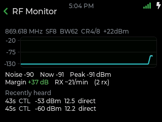
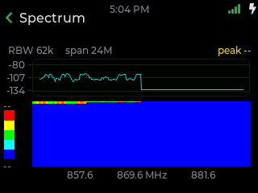